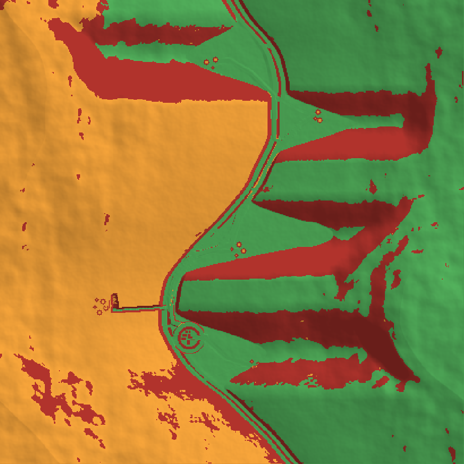
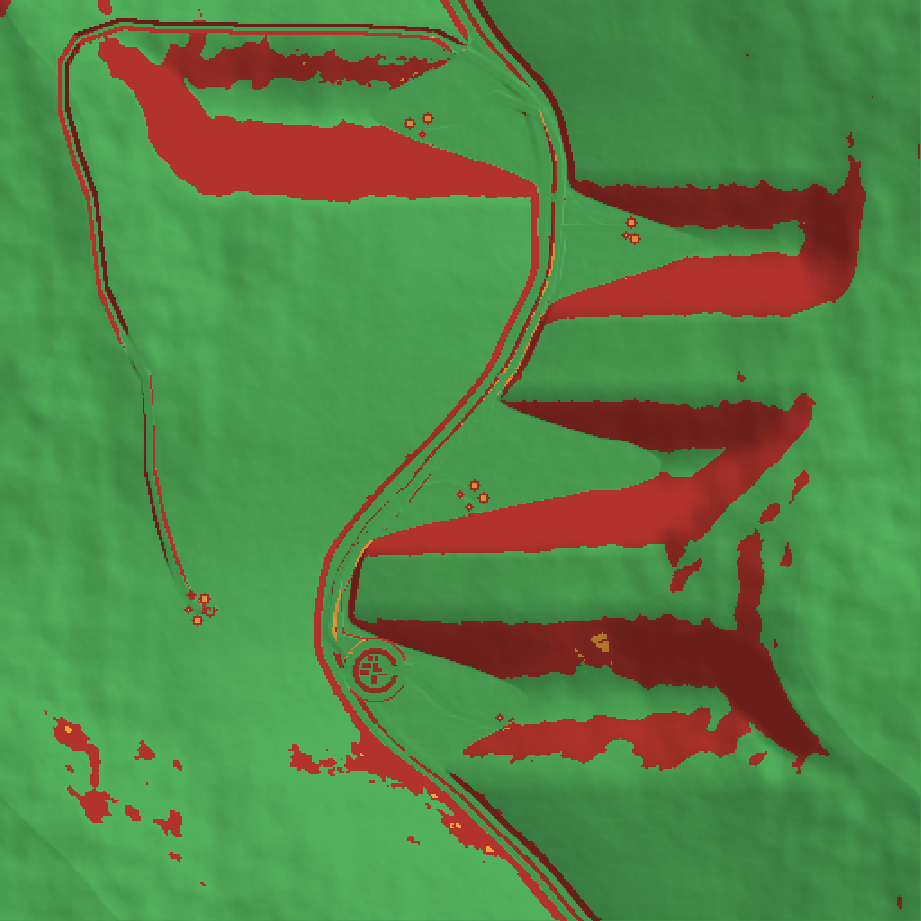
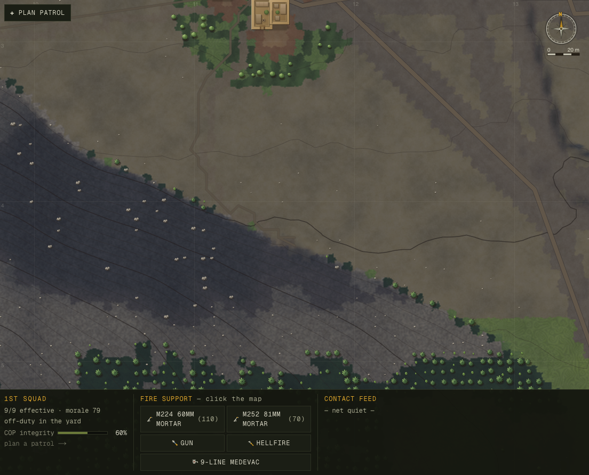
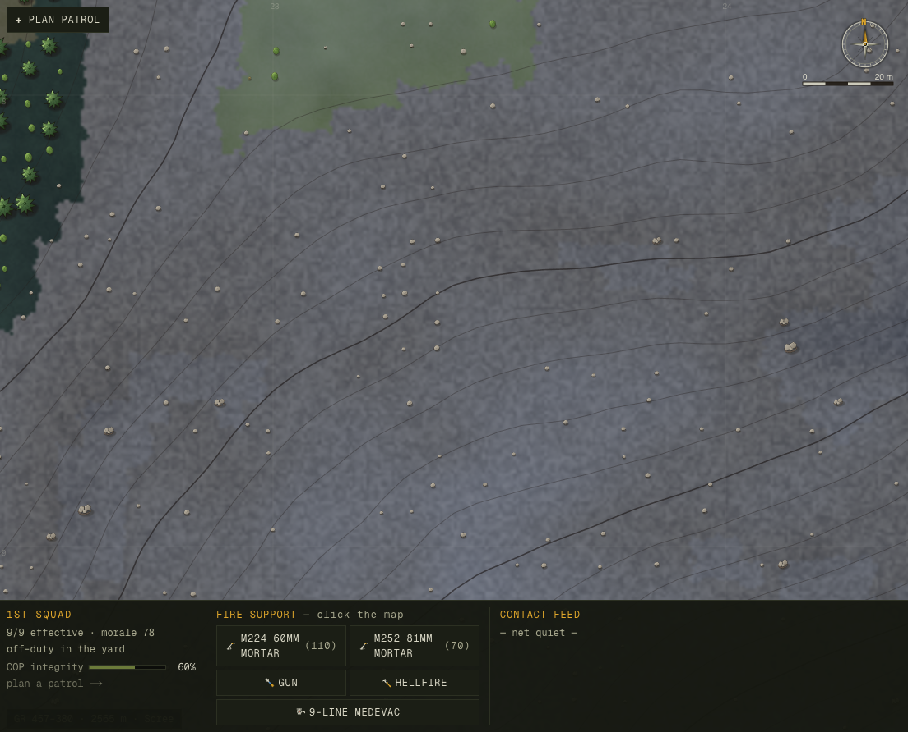

Field Engineering Report · 2026-06-09
The valley map looked alive but quietly lied about itself. Half the walkable ground was stranded behind cliff bands the squad could never reach; the footpaths were a 5-metre paint smudge; a 56° rock wall was drawn the same warm tan as a meadow; and the cover that decides a firefight was a single averaged number per cell, decoupled from the rocks you could see. This pass made the ground honest — and proved every change with a headless probe, a before/after number, and a balance run.
Four asks from the owner, taken literally: humans should be able to traverse up steep terrain; passable terrain should be most of the map and impassable terrain obvious; more footpaths, scaled correctly and molding to the terrain; more on the map to use for cover and tactics. Each became a number on a fresh headless probe, baselined on HEAD before a line changed, then re-measured after every isolated change. Nothing shipped on a hunch — the one change that felt right and measured wrong was reverted (below), and the one that looked fine in the metrics but ugly in a render was caught and rebuilt.
A new probe (scripts/passability-probe.ts) floods the valley from the gate the exact way the mover does (8-connected, anti-corner-cut) and asks two questions: how much of the map is passable, and how much is actually reachable. The answer reframed the whole problem:
80% of the map was passable, but only 48% was reachable. The hard "no foot traffic above 51° slope" cutoff wasn't just blocking the odd climb — the 5-metre roughness noise salt-and-peppered fake cliffs across otherwise-climbable faces, shattering the walkable ground into ~5 disconnected islands. Nearly half the map you could stand on, you could never walk to.


reachablepassable but strandedimpassable cliff
The foot-impassable line moved from slope 1.25 (≈51°) to FOOT_CLIFF_SLOPE = 1.40 (≈54.5°): the 1.25–1.40 band of Rock/Scree faces becomes climbable-but-slow, while the genuine cliffs (≥1.40, and the Land.Cliff classification at ≥1.5) stay hard barriers. Two details made it land where a previous attempt on this exact problem was reverted for stalling movement:
passableCell — the single predicate the planner and the mover both call. The reverted attempt had softened the planner's view while the mover stayed strict, so the planner walked a man at a cell he couldn't enter → wedge → re-path → freeze. With one truth there is no divergence to freeze on.Measured · 8-seed tune set
| metric | before | after | note |
|---|---|---|---|
| gate-reachable map (reach%) | 48.0 | 60.6 | biggest passable component 64→70% |
| village route-quality / loopy | 1.13 / 0% | 1.12 / 0% | existing routing unchanged |
| river banks-split / traps | 0% / 0 | 0% / 0 | river connectivity preserved |
| balance 12×50 — US WIA / KIA | 3.75 / 1.42 | 3.50 / 1.25 | combat unmoved (slightly safer) |
The valley had one straight goat-trail stub per village and nothing climbing the walls. Added a switchback trail generator (ascendTrail): from every reachable trailhead it climbs the local spur toward an OP shoulder by hairpins, gaining ~150 m and always stepping on passable ground (it deflects along the contour at a cliff and ends cleanly when boxed — a real trail dead-ends at a cliff, it doesn't cross it).
Every path's centerline — the MSR, the village tracks, the COP access road, the goat trails, the new climbing trails — is now captured at generation, so the renderer can stroke each as a scaled line at its real width (a ~4.5 m graded road with a dark cut-casing, a ~1.3 m goat trail as a single faint thread) that molds to the ground it was laid on — replacing the old 5-metre landcover tint that was both too wide for a footpath and nearly the colour of the dirt around it.

Cliffs were drawn the same warm tan as walkable scree — a 56° wall and a 30° meadow only differed by hue. The relief bake already computes a per-pixel slope; above the foot-passable line the face now goes cool slate, deep shadow, desaturated — a sheer rock wall, visibly distinct from the dusty slopes a soldier can cross. The threshold is the same FOOT_CLIFF_SLOPE the simulation blocks on, so the picture tells the truth: where it looks like you can't go, you can't.
Cover was a single averaged scalar per 5 m cell, and the drawn boulders were a cosmetic overlay scattered independently — so the rocks on screen had no relationship to the number that decides a firefight. Now boulders and rock outcrops are sim objects (terrain.coverObjects): a single deterministic source of truth that the renderer draws. On rocky ground, where the landcover already encodes real cover, that closes the loop — the rock you see is exactly where the engine's cover is (verified per-object in cover-probe.ts). And the owner's "more on the map" is delivered: ~11,600 objects including a strew of erratic boulders down the open slopes that were bare before.

stampNew seam is left in place for the real fix: sub-cell directional cover (behind this rock, exposed from that angle), which can be both usable and non-grinding. That's the honest half of issue 020; the heavy half is scoped, not shipped.Three new probes were written for this pass and kept (passability-probe, footpath-probe, cover-probe), each opening with a doc-comment naming the bug it metricizes. The standing gates ran green at every step: tsc --noEmit, npm run build, smoke (no-NaN + serialize round-trip), and a 12-deployment balance run for casualty + stall regressions. Determinism is a contract here — every change is a pure function of the seed-built terrain (no new persisted state, no new RNG draws), confirmed by same-seed hash equality. And the connectivity win was re-confirmed on a held-out seed tail (survey-40..59) the changes were never tuned on: reach% 57.5 (tune-set 60.6) — no curve-fit.
Commits: 7b24c19 reconnect the steep band · 359ce27 switchback foot-trails + path centerlines · 96793c2 footpaths as scaled lines + cliffs obvious · cover objects (pending). Probes: passability-probe.ts, footpath-probe.ts, cover-probe.ts. Raw record: docs/progress/2026-06-09-terrain-realism/. Built and verified by Claude Opus 4.8.